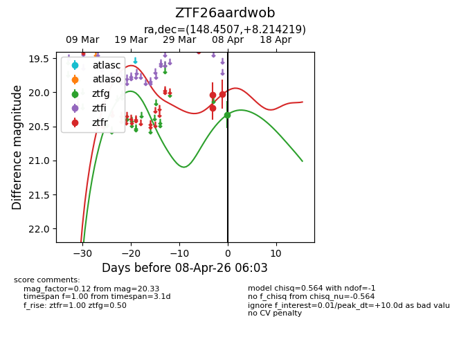
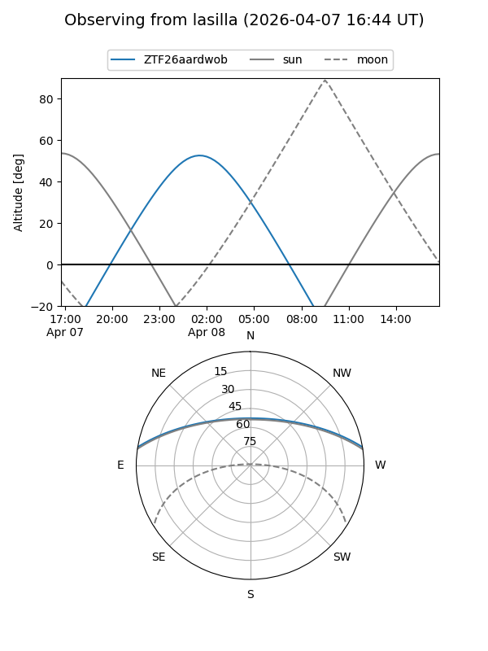
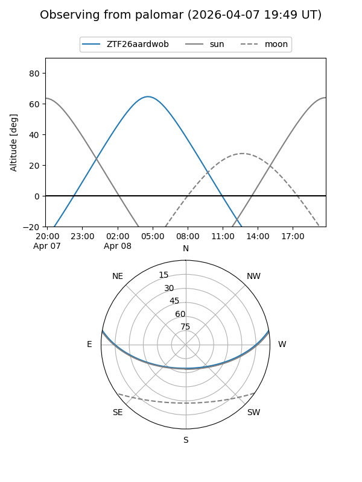
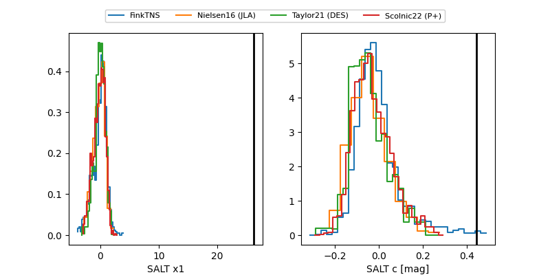

ZTF26aardwob
Target ZTF26aardwob at 2026-04-08 06:08
Aliases and brokers:
FINK: link
Lasair: link
ALeRCE: link
alt names
ZTF26aardwob (ztf,fink_ztf)
Coordinates:
equatorial (ra, dec) = 148.4507,+8.21422
equatorial (HMS+DMS) = 09:53:48.16,+08:12:51.19
galactic (l, b) = (228.6749,+43.97960)
Flags:
Photometry:
last ztfg=20.33, ztfr=20.03
1 ztfg, 3 ztfr detections
Lightcurve

Visibility


Additional plots
